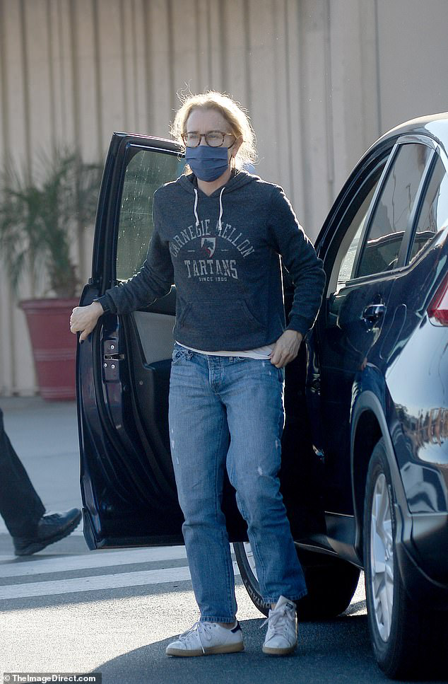
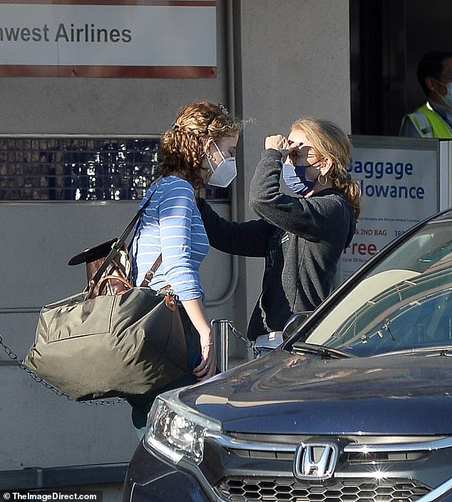
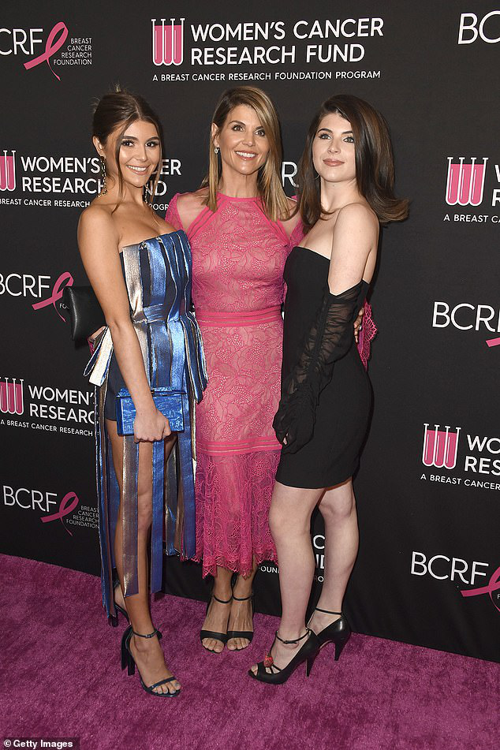

Felicity Huffman sports a Carnegie Mellon University sweatshirt to drop off daughter Sophia at the airport ... one year after going to prison for her role in college admissions scandal
It's been a little over one year since Felicity Huffman served out her prison sentence for her role in the college admissions scandal and what a difference 12 months makes.
The 57-year-old actress was spotted proudly showing off her school spirit in a Carnegie Mellon University sweatshirt while dropping her daughter Sophia to the Burbank Airport on Wednesday.
In 2019, Felicity pleaded guilty to paying an admissions consultant $15,000 to have a proctor correct Sophia's answers on the SAT and in October she finally completed her court ordered probation in connection to that conviction.

Proud mom: Felicity Huffman was spotted showing off her school spirit in a Carnegie Mellon University sweatshirt while dropping her daughter Sophia to the Burbank Airport on Wednesday - one year after she served time in prison for the college admissions scandal
Following her mom's involvement in what was dubbed operation Varsity Blues, Sophia Macy was accepted into Pittsburgh's prestigious Carnegie Mellon University.
Huffman wore her pride literally on her sleeve as she was seen this week dropping the 19-year-old off to the airport while wearing a hooded sweatshirt emblazoned with the college name.
The Desperate Housewives star was dressed down to say her goodbyes in a pair of baggy jeans, the hoodie and a facemask.
Her blonde hair was pulled back in a low ponytail and she wore a large pair of black rimmed eyeglasses.
Drama: In 2019, Felicity pleaded guilty to paying an admissions consultant $15,000 to have a proctor correct Sophia's answers on the SAT and in October she finally completed her court ordered probation in connection to that conviction
Guilty: Huffman admitted to paying admissions official William Singer via his nonprofit Key Worldwide Foundation, which authorities said was set up as a front to accept bribes
The actress served 11 days out of her 14-day sentence and was released from a federal facility in Dublin, California in October of 2019.
She was also fined $30,000 after she admitted to paying $15,000 for a proctor to correct wrong answers on her daughter Sophia's SATs.
Huffman admitted to paying admissions official William Singer via his nonprofit Key Worldwide Foundation, which authorities said was set up as a front to accept bribes.
'I broke the law,' she said following her sentencing. 'I have admitted that and I pleaded guilty to this crime. There are no excuses or justifications for my actions. Period ... I was frightened. I was stupid, and I was so wrong.'

Big news: The college freshman revealed on social media in April that she would be following the acting footsteps of her mom and dad, William H. Macy, and had been accepted into the Carnegie Mellon University School of Drama
She added: 'I can promise you that in the months and years to come that I will try and live a more honest life, serve as a better role model for my daughters and family and continue to contribute my time and energies wherever I am needed.'
In a letter last fall seeking leniency from the court, Huffman said she engaged in the scheme after her daughter's dreams of going to college and pursuing an acting career were jeopardized by her low math score.
Sophia was kept in the dark about her mother's actions and confronted her after news of the FBI's sweeping Operation 'Varsity Blues' broke, saying, 'Why didn’t you believe in me?' Huffman wrote in her letter.
Doing anything she could: In a letter last fall seeking leniency from the court, Huffman said she engaged in the scheme after her daughter's dreams of going to college and pursuing an acting career were jeopardized by her low math score
As of last month, Felicity officially finished her supervised release, including 250 hours of community service, according to her legal team, TMZ reported.
Huffman will now be able to use her passport and travel, though her felony conviction in the states could complicate entry into certain areas.
The other Hollywood names uncovered as part of the federal investigation into the bribery scandal included actress Lori Loughlin and her husband, fashion designer, Mossimo Giannulli.
Loughlin reported to the Federal Correctional Institution in Dublin on Friday to start her two month sentence and source told UsWeekly that it has not been easy.

Fall from grace: The other Hollywood names uncovered as part of the federal investigation into the bribery scandal included actress Lori Loughlin and her husband, fashion designer Mossimo Giannulli
The 56-year-old star of Full House has been a 'wreck' according to a source who went on to explain: 'Lori tried her best to be brave and look at the end result but there was nothing that could dissipate her fears.'
Meanwhile, Giannulli is set to serve his five-month prison sentence in at the federal prison in Lompoc, California.
In agreement with their plea deals, Loughlin must also pay fines of $150,000 and complete 100 hours of community service.
Giannulli is slated to pay fines of $250,000, finish 250 hours of community service and remain on probation for two years.